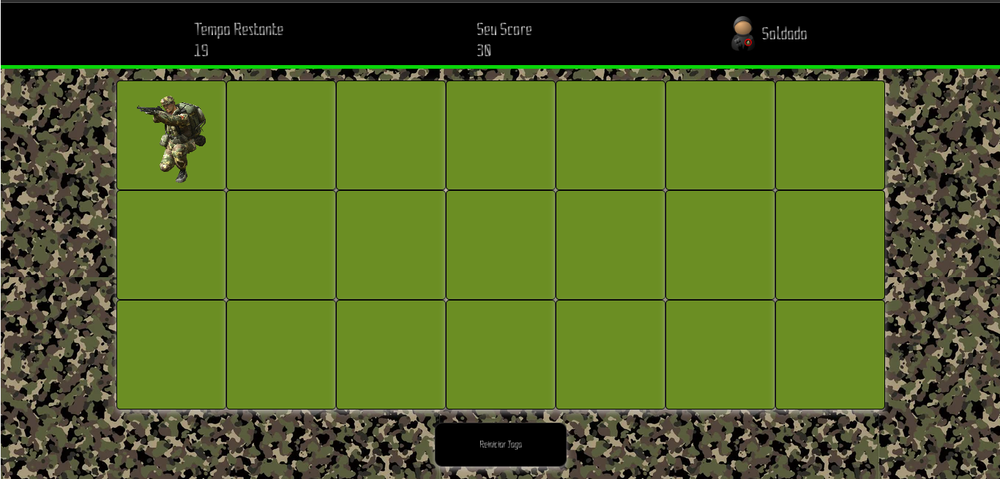
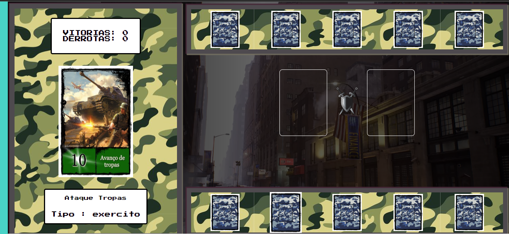
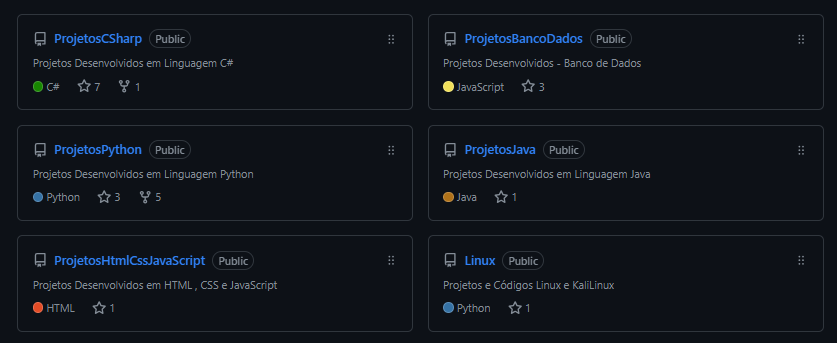

Principais Tecnologias
Linguagens de Programação


Frameworks
Outras Tecnologias


Memoria Tech

Jogo da memória produzido inicialmente em um bootcamp da DIO, com diversos upgrades, alterações e adaptações.
>>>> Clique para Jogar <<<<
Galinha Feliz

Jogo da galinha feliz, onde o objetivo é clicar em cima da galinha e quando clicado, ela coloca ovos e atribui dez pontos ao jogador.
>>>> Clique para Jogar <<<<
Soldado Game
Jogo de tiro, com objetivo de clicar nos soldados inimigos que surgem aleatoriamente na tela,
sendo atribuidos dez pontos a cada acerto.
>>>> Clique para Jogar <<<<
World War
Jogo Baseado em um projeto de game Yu Gi Oh! Com adaptações e incrementos que transformaram em um jogo CardGame de Guerra.
>>>> Clique para Jogar <<<<
Numero Secreto

Jogo para adivinhar o numero secreto! Utilizado leitura dos textos durante o jogo.
>>>> Clique para Jogar <<<<
Meus Repositórios do GitHub

Sou apaixonado por tecnologias e adoro aprender coisas novas.
Comecei na programação com cursos de HTML pelo youtube em 2016, migrando para esta área atrás de conhecimentos,
me apaixonei pela sensação de ter "o poder" de criar do zero, apenas utilizando palavras.